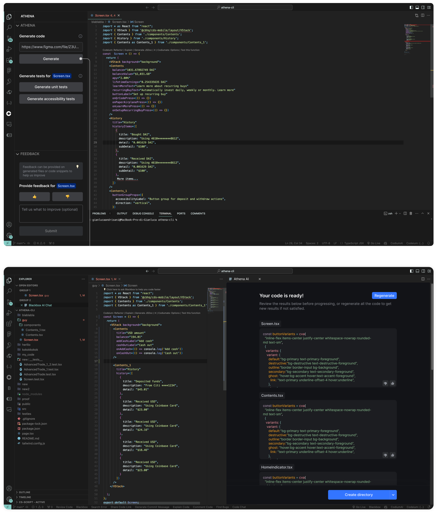
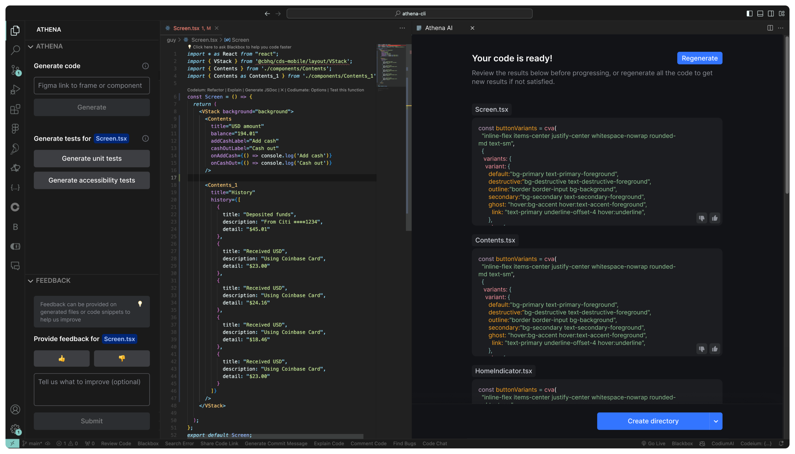
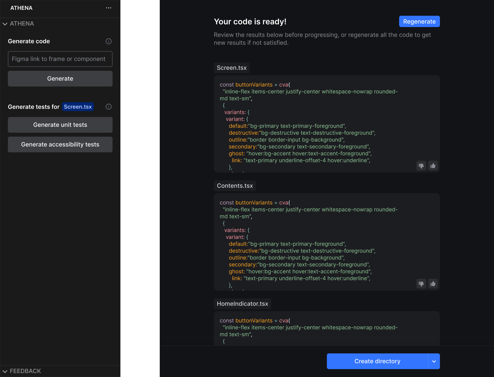
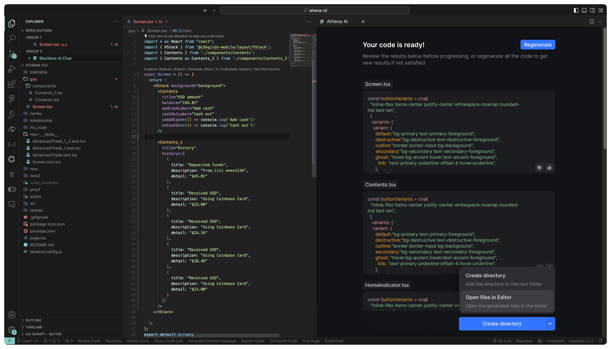
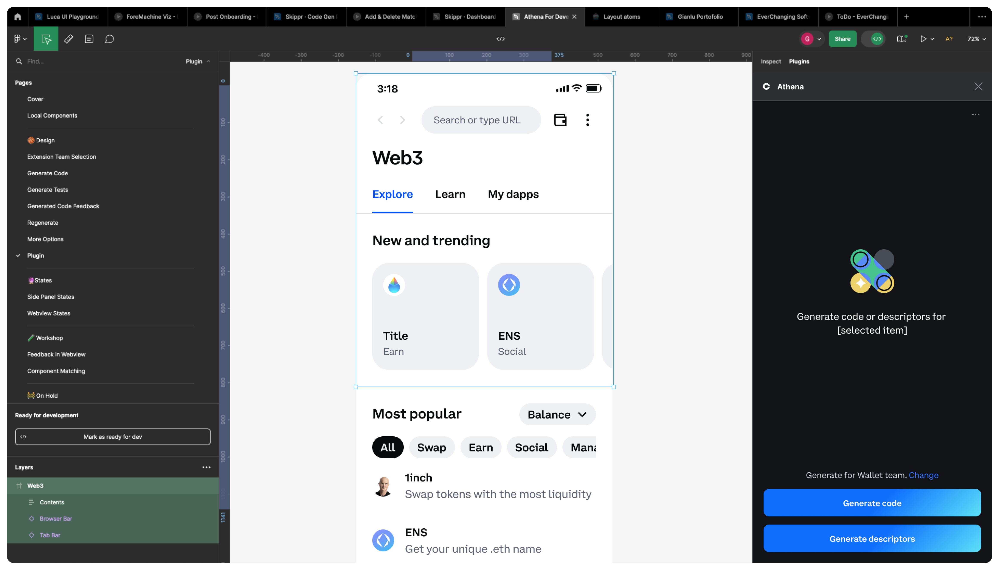
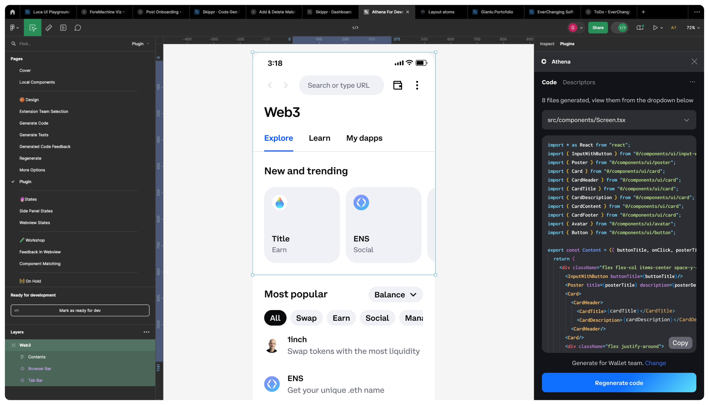
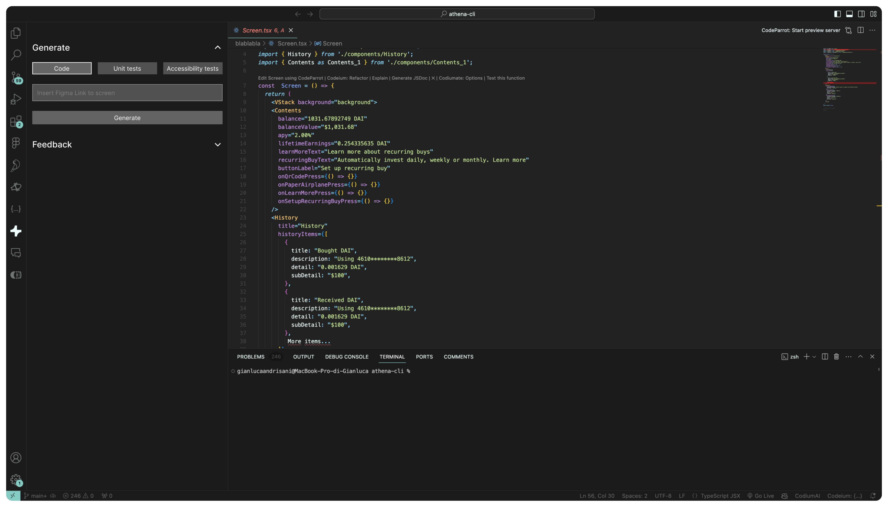
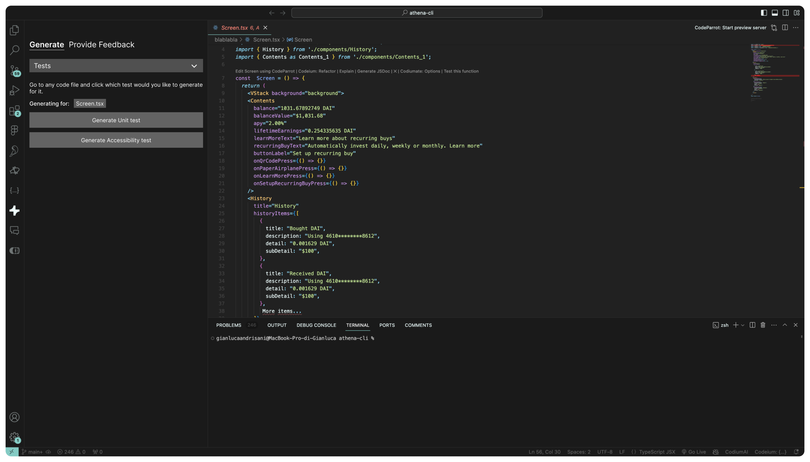
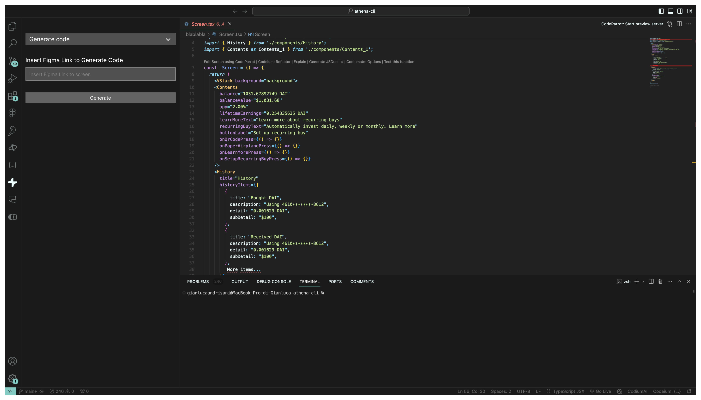

Athena is a code generation tool that helps developers by creating code based on Figma designs. However, previous solutions required users to switch platforms, interrupting their workflow. To address this, we developed a VSCode extension that integrates Athena directly into the developer’s environment, enhancing usability and efficiency.
Developers find it cumbersome to switch between tools to use Athena. This interruption discourages adoption and complicates the workflow. Our goal was to integrate Athena into VSCode to create a seamless user experience.
We aim to develop a VSCode extension for Athena to cover all user scenarios, enhance the overall experience, and offer features not possible with the CLI. This extension is expected to boost adoption among Coinbase developers.
Product Designer
2 months, pushed in May
Me
Guy Gruper - Full Stack Engineer
Ben Brouckaert - Head of Design
The guiding principles throughout the project, that will be explained further below.
The core code generation process involves two primary steps. First, users input the link to a screen or component. Following this, the generated result automatically opens as a WebView within VSCode, allowing users to review and regenerate the code as needed.
Developers prefer not to have generated code directly placed into their directories without prior review. To maintain full control over their development environment, it is essential to allow them to review and, if necessary, regenerate the code before it is finalized. This principle led to the inclusion of the WebView directly in the IDE, to let users have ownership and control of the output.
When working in their preferred environments, developers seek a simple interface that seamlessly integrates with the general UI, avoiding unnecessary complexity. Following this principle, the components and UI elements of the extension were designed to be subtle and discreet, ensuring they do not overwhelm or draw too much attention. Additionally, to provide the best developer experience, the UX guidelines established by VSCode were thoroughly followed.
Developers prefer to manage code-related tasks using the IDE’s native interactions. Based on this, we incorporated native patterns and elements from the tools they use daily, respecting their affordances and preferences.
The ultimate goal of the product is to drive adoption of the Figma-to-code tool. To support this objective, we also developed the Figma DevMode plugin.
The plugin was designed to respect all the patterns and behaviors established by the other products in the Skippr environment.
 Throughout our discovery process, we talked to the in-house and Coinbase's developers and learned that developers have specific needs that set them apart from regular users.
Designing for developers is a challenging task that involves considerable trial and error. In this project, we explored various design options, repeatedly reviewing them with engineers to ensure the best possible experience that seamlessly integrates into the developers' workflow.
  
Having coding experience myself, I could relate to many of the issues and behaviors that developers typically encounter.
However, each developer has a unique style, behaviors, and preferences, which is why IDEs are generally highly customizable.
Finding a solution that could accommodate these diverse preferences was both challenging and, at times, overwhelming.
To confirm my assumptions, I validated my design decisions with developers. Even then, their opinions often contrasted
with one another, necessitating decisions based on the best possible UX patterns.